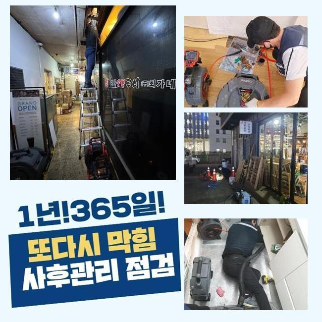
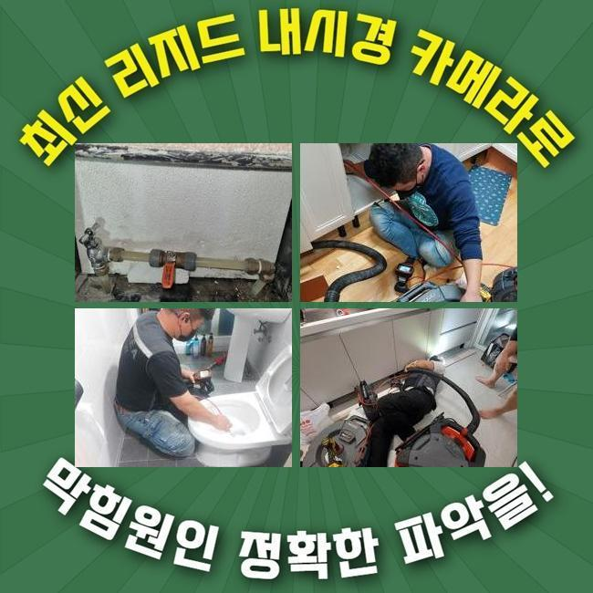
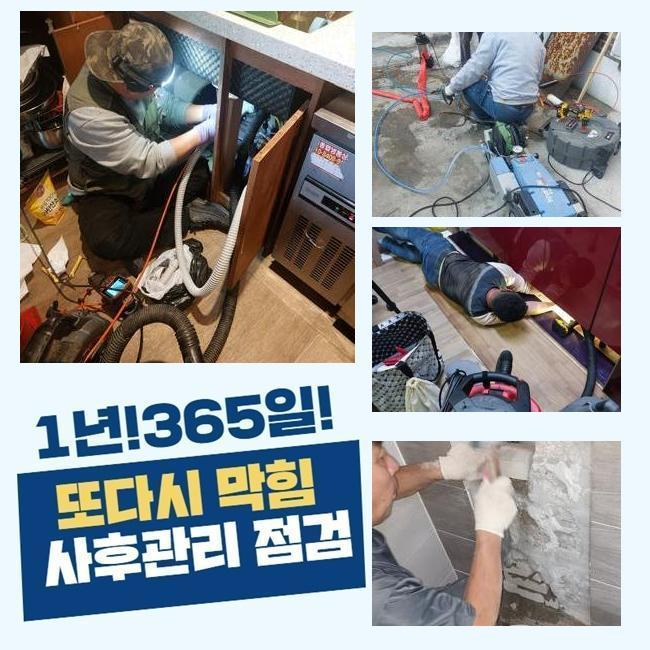
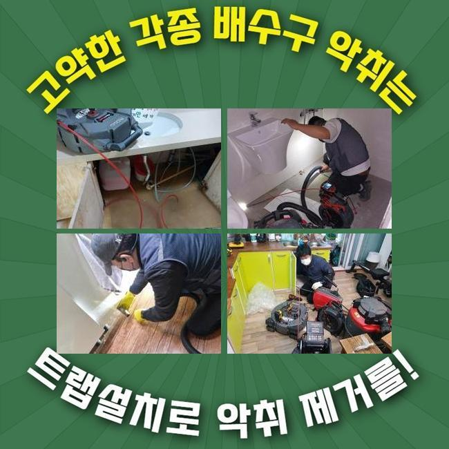
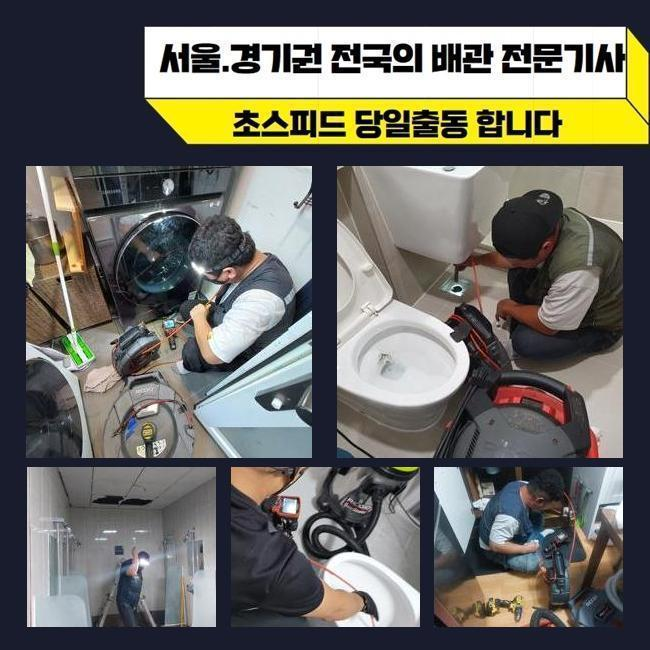
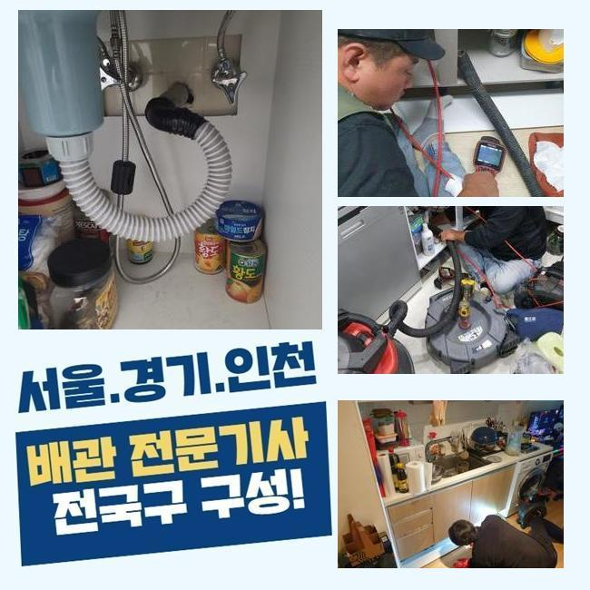
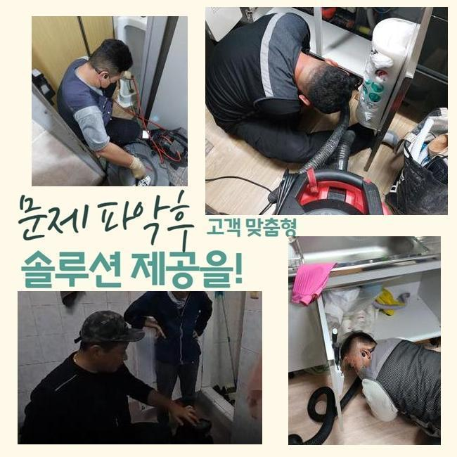

🏠 고양시 선유동욕실막힘 내곡동 하수관고압세척 누수탐지
고양 싱크대막힘 전문 시공 후기

📋 작업 개요
- 위치: 고양
- 서비스 유형: 싱크대막힘, 배관막힘, 누수수리, 역류해결, 뚫는업체, 고압세척, 설비공사
- 작업 일시: 2025. 3. 5. 10:31
- 업체명: 하수구수사대 (010-5615-2118)
🔍 문제 상황
고양시 선유동욕실막힘 내곡동 하수관고압세척 누수탐지
욕실공간이나 싱크대는 필수불가결한 곳인데요
그래서 생활하다가 급작스럽게 배수문제에 부닥친다면 갑갑함은 엄청날 것입니다
하지만 배수와 관련한 문제들을 크게 신경쓰지 않으시는 고객분들이 많죠
얼마 뒤에 증세가 사라지거나 심각한 문제로 전이되지는 않을거라 믿기 때문이랍니다
그렇지만 현실적인 상황은 그것과 다르죠
이를 초창기에 적합하게 정리한다면 곤란한 상황에 놓이지 않을 수 있답니다
배수가 천천히 이루어진다는건 하수관의 특정 지점에 물흐름을 막는 침전물이 존재한다는 방증이겠죠
오물이 그위에 적체되어 한층 까다로운 막힘으로 진행되기전에 전문업체에 의뢰하여 점검을 똑바로 수행한뒤 세정해야 한답니다
저저번주에 내방드린 지점을 세부적으로 설명해드리고자 합니다
배관 정체상황으로 고민에 처하신 분들에게 도움이 되었으면 해요
저희기술팀이 출장간 데는 꼬마빌딩에 소재한 식당입니다
의뢰자께선 욕실과 개수대공간까지 점진적으로 물이 안내려간다고 말씀하셨죠

🔎 원인 분석
💡 전문가 진단: 정밀 진단 장비를 사용하여 슬러지의 고착 여부를 판명하고 타격/세척 작업을 실시했습니다.
전적으로 고장나버린건 아니며 얼마 지난다음엔 흘러내려갔기 때문에 차후에 고쳐보자는 생각으로 영업하고 있으셨다고 하네요
그래서 결국에는 막힘이 심화되어서 하수처리가 안되었고 오취와 역류증세까지 발현된 것이죠
하수관은 상당히 길고 좁다란 통로로 만들어져 있답니다
따라서 표면적으로 보아서는 침전물이 얼마만큼 상존하는지 파악하기 힘들죠
그래서 방문지로 넘어갈때는 내시경설비를 꼭 챙겨두어야 합니다
해당 기기의 끝단에는 소형방수카메라가 존재하는데요
그걸로 직관하기 어려운 배수관 안까지 세밀하게 검사가 가능한것이며 찌꺼기의 종류까지 파악할수 있는거죠
이것으로 확인해본 파이프 속은 굉장히 더러웠습니다
머리카락 등과 여러가지의 노폐물들이 누증된 상태였죠
그러한 찌꺼기들이 뒤엉켜서 돌처럼 굳은 모습을 보였기에 좁아진 관로구멍을 가로막아 물흐름이 적절히 되지 않았어요
이것들을 방치하는 경우엔 성분이 더욱 단단해져 하수관벽에서 떨어지기 힘들게 되겠죠
그렇다면 더욱더 정황이 나빠지는 것이기에 신속하게 고쳐야 했죠
이럴 때에 활용하는 기계는 샤프트분쇄기입니다

🔧 작업 과정
비좁은 틈도 쉽게 투입가능한 장점이 있습니다
장비끝에는 노커라는 쇠붙이가 붙어서 빠른 속도로 움직이며 배수관안쪽에 잔존하는 딱딱해진 여러 노폐물들을 분쇄해주죠
이어서 샤프트 분쇄작업을 단행하였는데요
전동기기와 노커를 연결하고 나서 플렉스샤프트를 작동시켜서 벽면에 붙은 찌꺼기들을 소제하기 시작했죠
어떤곳에 슬러지들이 집중되어 있는지 간파해야 돼서 내시경카메라를 활용한 관찰도 동반진행 하였어요
해당 기기로 누증량이 많은데를 기점으로 세척해 나간다면 한층 빨리 진행할수가 있는거죠
하수관의 내측이 손상되는일이 없게끔 신중한 자세로 이물들만을 분명하게 타게팅하여 분쇄를 해나갔죠
혹여 세정을 하는 과정에서 파이프에 큰 하중을 가한다면 금이 가서 누설현상이 일어나기도 해요
따라서 내시경기기나 분쇄기기가 준비되어야 하는것도 중요하지만 담당자의 테크닉도 충분해야 할것입니다
슬러지가 집중된 구역을 깨끗이 정리한다음에 작은 조각들까지 세척하였습니다
그리고 바로 점검에 들어갔는데요
많은양의 오수를 일시에 배수문으로 쏟아부었고 정체하거나 솟아오르는 증상은 없는지에 대해 점검하였어요
별다른 특이사항은 없었으므로 즉각 다른 위치로 이동하게 되었죠
이정도에서 마무리진다면 한두달 이용에는 괜찮을수 있으나 몇달뒤 막힘증세가 생겨날 가망성이 높기 때문이었어요
욕실내의 개별배관과 결속된 메인배관도 점검하여 노폐물 누적 상황을 알아보기로 했죠
화장실 배수관에서 체증이 일어났을때 관계된 메인관로에까지 이물들이 적체되었을 여지가 높으므로 전반적 배수관 정비를 시행하는게 합당합니다
따라서 횡주관으로 이동해 점검을 이어나갔으며 저희들의 예측대로 관벽에 달라붙은 노폐물들을 발견할수 있었답니다
횡주관과 관련된 개별배수관까지 전면적으로 세척을 진행했고 잔재들이 떨어져나간 깔끔해진 배수관을 목도할수 있었죠
플라스틱 등의 물에 안녹는 물질들은 일상중에 다시 쌓일 수 존재하는데요
그러하기에 일년에 한두번은 관련기술자에게 의뢰하여 정비하시는 편이 바람직하다고 설명드렸죠
또 장기간 하수관을 보호하는 방책들도 저희들의 지식선에서 상냥하게 말씀드렸습니다


✅ 작업 완료
관로에 이상이 생긴다면 다양한 어려움을 맞닥뜨리게 되니 애초에 그러한 일이 안나타나게 섬세하게 방예를 실시하는게 바람직하겠죠
휴일에도 요청시 방문드린다는 사항도 안내드렸죠
오래된 주거지에선 누수현상도 자주 발발하기에 해당 수리요청도 많답니다
이에 즉시 뚫음뿐만 아니라 누수공사도 한다는 사실을 설명드렸답니다
어디에서 고장이 생겼고 며칠전부터 그런건지 간략하게 전달해주시면 더욱더 효율적으로 안내드릴수 있어요
그후 말씀해주신 시각에 배관전문가가 전용기구들을 소지한채 방문드리니 부담없이 전화주시길 당부드려요




⚠️ 베란다 누수 및 방수 관리 방법
- ✅ 비가 많이 올 때 창틀 주변이나 아래층 천장에 얼룩이 생기는지 정기적으로 확인해 보세요.
- ✅ 우수관 주변 실리콘 마감이 들뜨거나 깨진 틈새가 있는지 손상 여부를 수시로 체크하세요.
- ✅ 베란다 바닥 타일의 줄눈(메지)이 소실되면 그 틈으로 물이 침투하여 누수가 유발됩니다.
- ✅ 누수 의심 증상 발견 시 방치하면 아래층 손실이 커지므로 즉시 전문가의 진단을 받으십시오.
💡 핵심 정리
- 확실한 장비 작업(내시경 점검 및 샤프트 스케일링)으로 원인을 뿌리 뽑습니다.
- 작업 후 1년 이내에 동일한 부위 재발 시 100% 무상 A/S 서비스를 보장합니다.
- 서울 · 경기 · 인천 전 지역에 24시간 언제든 긴급 출동할 수 있도록 항시 대기 중입니다.
❓ 자주 묻는 질문 (FAQ)
🚨 고양 싱크대막힘 문제로 고민이신가요?
정확한 원인 진단과 확실한 시공으로 재발 없는 해결을 약속드립니다.
24시간 긴급 출동 | 서울 · 경기 · 인천 전지역 | 1년 내 재발 시 무상 A/S